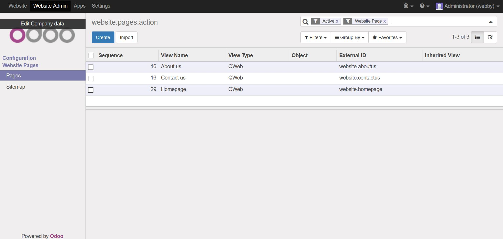

<div style="margin-left:100px;margin-right:100px;">
<h2>Description</h2>
View all website pages<br/>
<br>
<section class="oe_container">
    <div class="oe_row oe_spaced">
        <h2 class="oe_slogan">Keep track of your webpages</h2>
        <div class="oe_span6">
            <div class="oe_row_img oe_centered">
                
            </div>
        </div>
        <div class="oe_span6">
            <p class="oe_mt32">
Keep track of your webpages.<br/>
<br/>
<b>Instructions</b><br/>
1.  Go to Website Admin->Website Pages<br>
            </p>
        </div>
    </div>
</section>

</div>